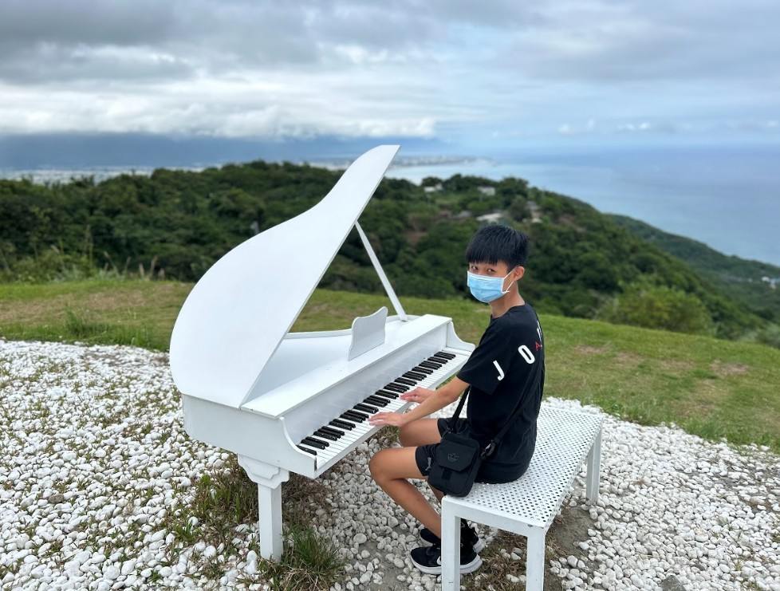
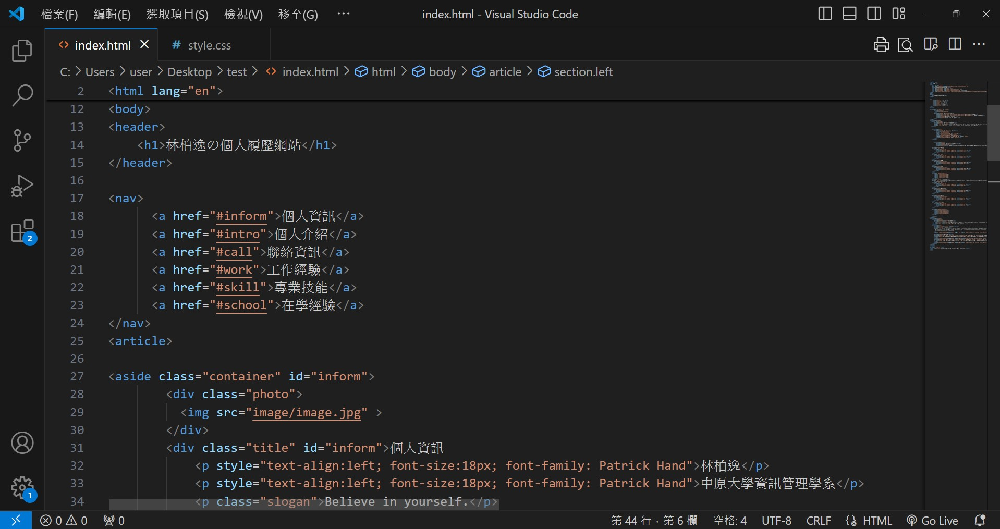

林柏逸
中原大學資訊管理學系
Believe in yourself.
Things will get better...
我是林柏逸，來自桃園市，是個I人，個性善良，做事有恆心，堅持到底，努力不輕易放棄，喜歡接受挑戰，嘗試新事物，平時喜歡看影集、追劇。
#INTJ #Taoyuan #Challenge #Movie
在程式語言的道路上，我還是個初學者，目前大二的我，學習了四種不同程式語言，其中HTMl是我比較拿手的，也是比較有興趣的，目前還在持續學習其他程式語言中......，希望未來的我，能夠學習更多程式語言，培養更強的程式能力。
PythonJava
HTMl
CSS
在文書處理方面，我最拿手的軟體是簡報PowerPoint，在大學裡，課堂上時常都需要做許多的報告，ppt已成為我不可或缺的能力。
WordPowerPoint
Excel
Canva

在大學期間，我利用放假的期間，嘗試了不同類型的工作。有在餐廳擔任外場工讀，接待各種不一樣客人，學會面對人群，培養自己的耐心與堅毅力、也有在系統公司擔任生產助理，幫忙公司整理雜亂的資料、分好生產材料，協助公司生產，並將資料電腦化，做成Excel表格，加強自己的文書能力。
我曾參加過電影欣賞社、魔術社等休閒性社團，參加電影欣賞社，是我喜歡看影集，社團課常常都會播放不同電影，我覺得看電影是一種紓壓的方式。 參加魔術社，可以學習一些特別有趣的魔術，培養自己的不一樣的技能，除了娛樂自己，也可以娛樂身邊的人。

在服務學習中，我們這組選擇去草漯沙丘淨灘，在淨灘的過程中，我們撿拾了很多塑膠垃圾，這些塑膠垃圾都會危害到生物的性命，因此，我們應該愛惜環境，隨身帶走自身的垃圾、做好回收分類，保護大自然，讓生物能永續生存。
利用上課所學的程式語言如HTML、CSS等，設計出專屬自己的個人網站。架設網站中，雖然遇上不少的困難、花費不少的時間，但當網頁完成後，很有成就感，也讓自己的程式能力變得更強。
